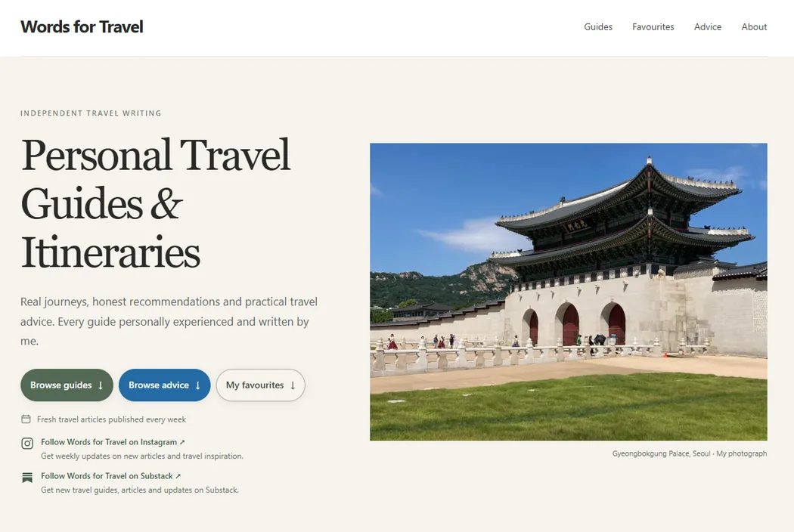
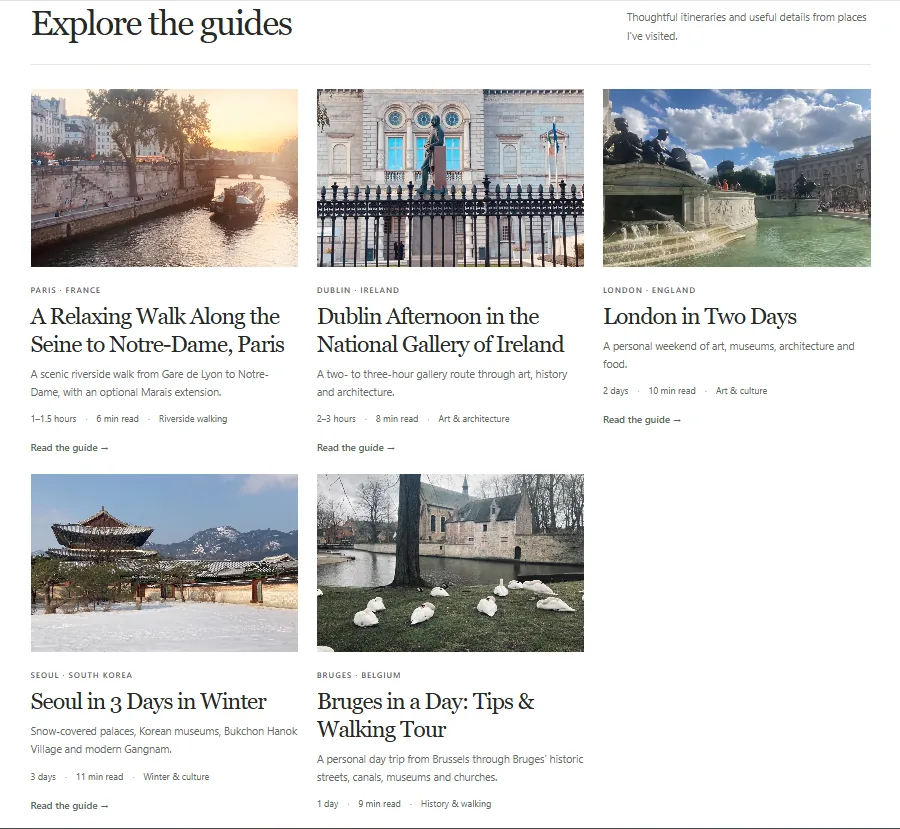
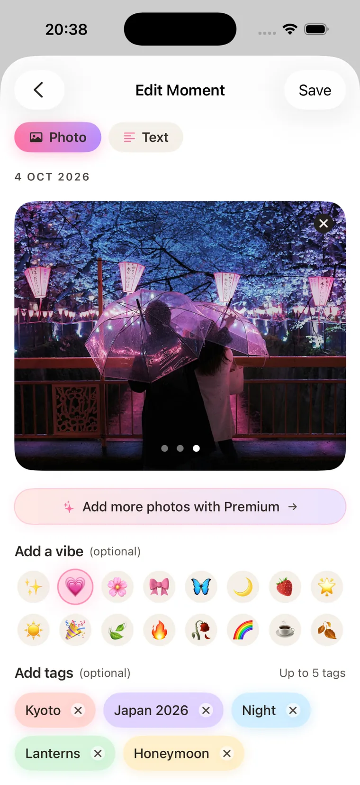
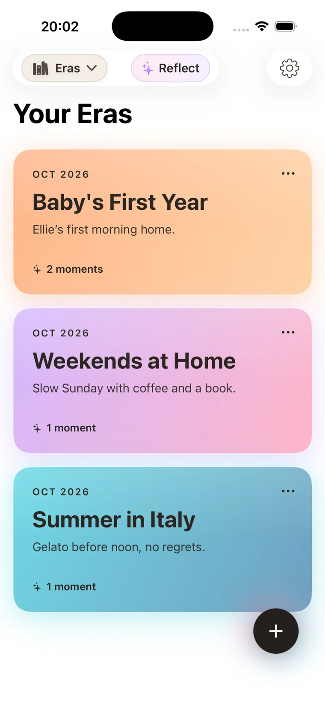
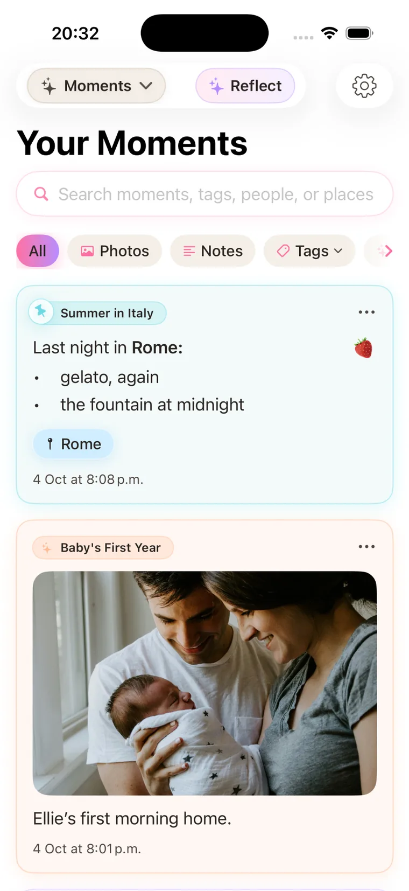

The riverside walk
My Seine-to-Notre-Dame guide includes the route, gardens, viewpoints and an optional Marais extension. Exactly the sort of practical detail that's easy to lose between a trip and a draft.
Read the Paris guide ↗Real-world example · Stillkeep × Words for Travel
A photo is a brilliant souvenir. But when I sit down to write a travel guide, it's often the small details I wish I'd saved: the walk I nearly skipped, the view around a corner, or the feeling of arriving somewhere new.
I'm John-Henry Roche. I make Stillkeep, a private photo journal for iPhone, and I also write Words for Travel, a free website of firsthand itineraries, places and practical travel advice. This is why I think keeping memories and writing about travel fit so well together.
Stillkeep: free to start on iPhone · Words for Travel: free guides, no app required

Meet the travel website
Words for Travel is where I publish the kind of travel advice I find useful myself: an itinerary you can follow, a favourite place worth slowing down for, and the practical details that are easy to overlook when planning from home.
You'll find a walk along the Seine in Paris, a two-day London itinerary, a winter guide to Seoul and a day in Bruges. There are favourite places and travel advice articles too, including packing and flight tips.
I write from personal visits rather than pretending every destination is a box I've ticked. Some of the site's photography is my own, and third-party images are credited where used.

Why keep a travel photo journal?
Most of us come home with more travel photographs than we know what to do with. The problem isn't taking them; it's remembering what happened just outside the frame.
When I'm thinking about a travel article, I want more than a pretty picture. I want to remember which route I took, what surprised me, where I stopped, and whether I'd recommend doing the same thing again.
That's the appeal of a travel photo journal: give a photo a little context while it's fresh, then come back to it when there's a story to tell. You don't need to write an essay every night. Sometimes a sentence is enough.
The simple idea: save the moment now, so future-you doesn't have to reconstruct it from a crowded camera roll.

Inside the app
Stillkeep is built around Moments (a photograph, words and optional details) and Eras (chapters that group related Moments). Imagine giving your next weekend away its own Era. Here's what you could save without turning your holiday into homework.
Create an Era for your trip, like “Summer in Italy”. Your days and discoveries then have a place to live together, rather than being scattered through your camera roll.
Add a photo or a note about the thing you'll want to recall: a favourite square, a surprise detour, the late-night gelato, or the café you would visit again.
Use Moments, notes and searchable tags to revisit an experience. Place and trip tags help you return to the right memory when you're writing later.


Stillkeep's free tier has limits; optional Premium expands how much you can keep.
From memory to published travel guide
A guide is more helpful when it has the things that can't be pulled from a generic list of attractions: where a walk feels especially pleasant, what was worth the extra time, or how a place worked in practice. A private travel diary can help preserve those impressions until it's time to write.
My Seine-to-Notre-Dame guide includes the route, gardens, viewpoints and an optional Marais extension. Exactly the sort of practical detail that's easy to lose between a trip and a draft.
Read the Paris guide ↗My two-day London guide brings museums, architecture, food and moving around the city into one personal itinerary.
Palaces, museums, Bukchon and Gangnam all feature in my winter itinerary — grounded in a trip rather than a made-up must-see list.
Try it on your next trip
No elaborate travel journal template required. If you're curious about how to document a trip, try one short note for each of these:
Those details are valuable even if you never publish a blog. They make the trip easier to remember. If you do write, they give you a much more personal starting point.
An easy three-minute habit
Make an Era for your holiday. Save a Moment when something catches your attention. Add the story and a location or trip tag. That's enough to build a travel memory journal with the little details intact.
Need inspiration? Browse 100 photo journal ideas →
Free to start · Private journal · iPhone app
Useful answers
Start with what a photograph can't tell you: a name, a feeling, a recommendation, a mistake or a detail you'd otherwise forget. A couple of honest sentences is usually more useful than a polished diary entry.
Yes. Stillkeep is an iPhone photo journal that lets you combine pictures and notes in Moments, group them into Eras and use tags to help find them again. You can start free, with optional Premium if you need more room.
Group entries by trip, keep short notes while details are fresh, tag places or topics, then review those entries when planning a story. Check opening hours, prices and other changeable travel facts again before publishing.
Yes. Words for Travel is a free independent travel guide website with firsthand itineraries, favourite places and practical travel advice. You can read it at wordsfortravel.com.
No. They're illustrative Stillkeep entries, included to show how the app can save photos, notes, Eras and tags. The Words for Travel articles linked above are real published guides from personal journeys.
Two good ways to go from here
Whether you want to remember a trip you've taken or plan the one that's next, there's a place to start.
Both projects are made by John-Henry Roche. This is a founder-written example, not an independent third-party endorsement.